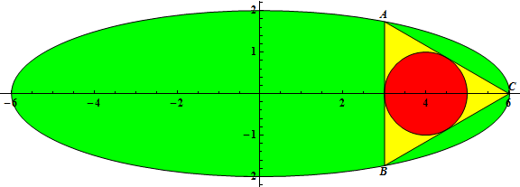
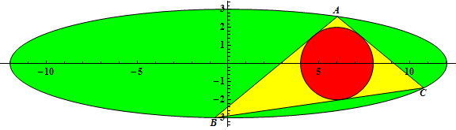

The triangle $\triangle ABC$ is inscribed in an ellipse with equation $\frac {x^2} {a^2} + \frac {y^2} {b^2} = 1$, $0 \lt 2b \lt a$, $a$ and $b$ integers.
Let $r(a, b)$ be the radius of the incircle of $\triangle ABC$ when the incircle has center $(2b, 0)$ and $A$ has coordinates $\left( \frac a 2, \frac {\sqrt 3} 2 b\right)$.
For example, $r(3,1)=\frac12$, $r(6,2)=1$, $r(12,3)=2$.


Let $G(n) = \sum_{a=3}^n \sum_{b=1}^{\lfloor \frac {a - 1} 2 \rfloor} r(a, b)$
You are given $G(10) = 20.59722222$, $G(100) = 19223.60980$ (rounded to $10$ significant digits).
Find $G(10^{11})$.
Give your answer in scientific notation rounded to $10$ significant digits. Use a lowercase e to separate mantissa and exponent.
For $G(10)$ the answer would have been 2.059722222e1.
dev: solve(max_limit=10) → █
main: solve(max_limit=100000000000) → █
Solution pending... the mathematician is still thinking.
Nothing here yet - come back when the dust has settled.